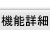

管理者設定 表示設定の設定内容を確認する画面です。
機能説明
確定ボタン管理者設定 表示設定を登録し、登録完了画面へ遷移します。 |
戻るボタン管理者設定 表示設定画面へ遷移します。 |
|---|
表示・入力項目説明
表示件数
管理者で一括強制にするか各ユーザで設定するか選択し、ショートメール一覧画面で1ページに表示する件数を選択します。
自動リロード時間
管理者で一括強制にするか各ユーザで設定するか選択し、一覧で自動リロードを行う時間間隔を設定します。
写真の表示設定
管理者で一括強制にするか各ユーザで設定するか選択し、ショートメール一覧画面・確認画面での写真の表示・非表示を設定します。
添付画像表示設定
管理者で一括強制にするか各ユーザで設定するか選択し、ショートメール確認画面での写真の表示・非表示を設定します。